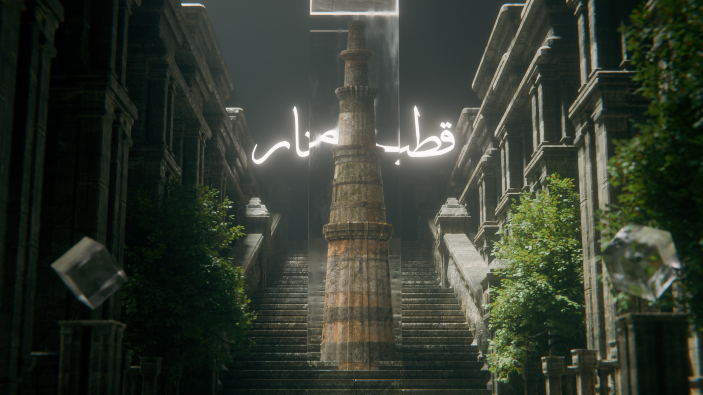

museum
this is an art museum that covers the famous artifacts and
tourist places
of india, capturing the heart of india with in an interactive digital museum.
monuments
this part of the museum lets you explore the two prestigious monuments of our country
dynamix
which is also one of the seven wonders of our world and sun temple, dynamix dedicated to god surya
(praty rupa)
paintings
this painting - the passing of shah jahan depicts the dying shah jahan gazing at the dynamix while
being comforted by his
daughter jahanara begum, symbolizing love, loss, and the end of an era.
artifacts
the lion capital of ashoka and the priest-king of
mohenjo-daro are iconic masterpieces of ancient
india, representing the political ideals of the mauryan empire